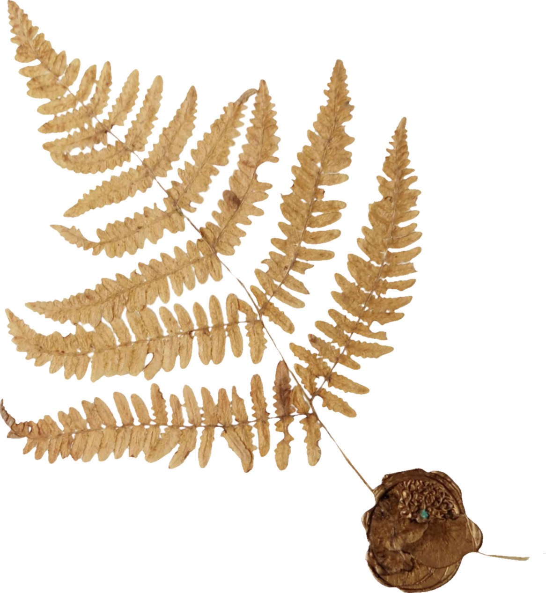
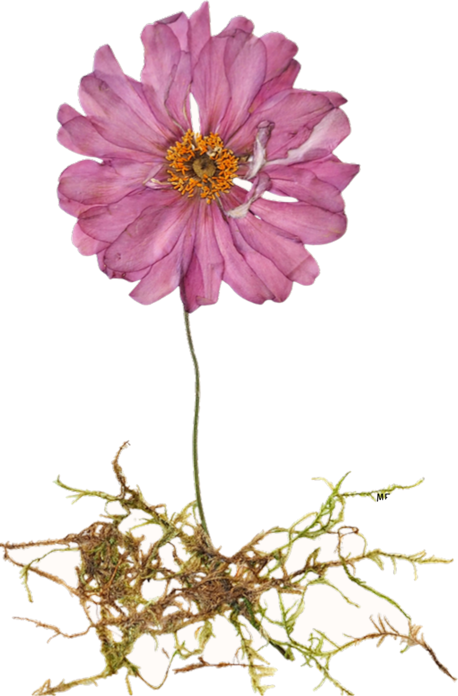
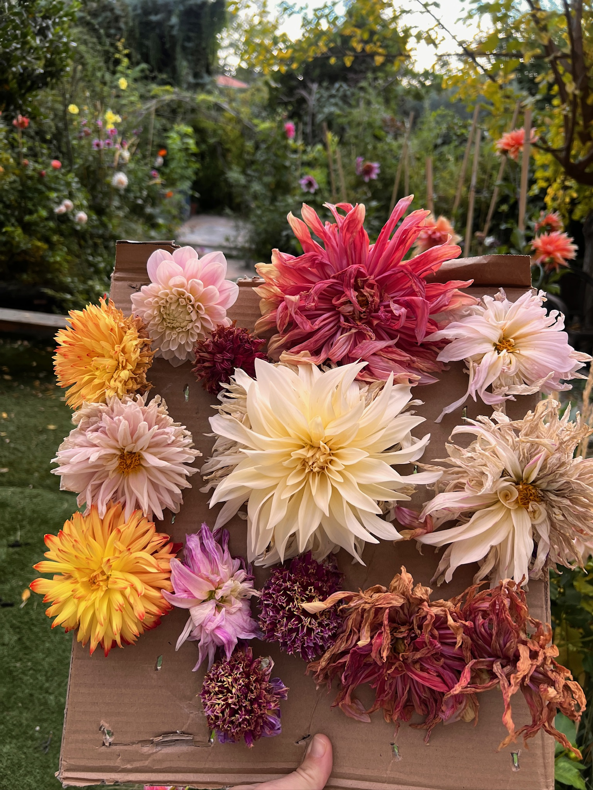
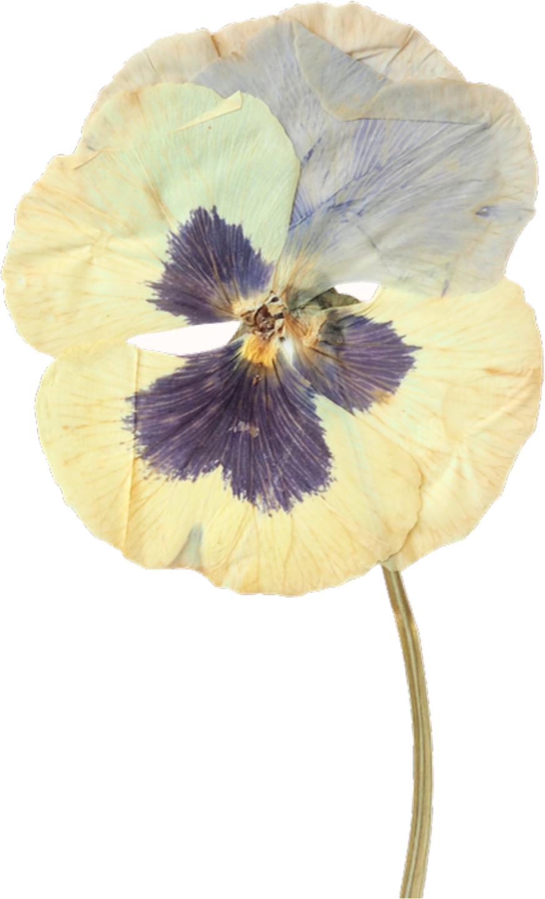
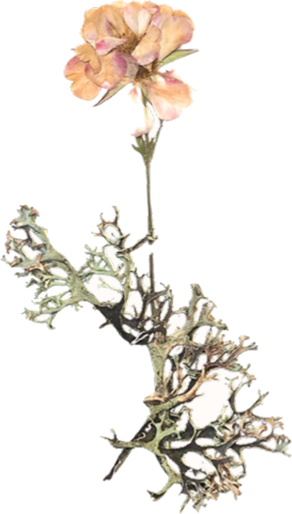

Lo que el huerto me enseñó sobre la prisa
Nada florece porque le grites.




Cuando planté las primeras dalias, iba cada mañana a mirar si habían salido. Las regaba de más, movía la tierra, les hablaba con impaciencia. Y no pasaba nada. La tierra tiene su propio calendario, y no atiende a razones.
Tardé una temporada entera en entenderlo: nada florece porque le grites. Ni las flores, ni las ideas, ni una misma. El huerto me lo repitió hasta que lo aprendí con el cuerpo.
La espera como parte del trabajo
En el arte floral para eventos todo iba deprisa. Había una fecha, un encargo, una entrega. Cuando abrí este espacio para crear sin presión, lo primero que tuve que desaprender fue precisamente eso: la urgencia. El huerto no se puede acelerar, y ese fue el mejor maestro que he tenido.
Aprendí a esperar mirando las dalias, y esa espera cambió mi manera de crear y de vivir.
Ahora, cuando alguien llega al taller con prisa por que le salga «bien», le enseño una flor imperfecta. Un pétalo torcido, una hoja comida. Y le digo lo mismo que me dijo el huerto a mí.
Tres cosas que hago distinto desde entonces
- Empiezo el día en el huerto, sin móvil, aunque sean diez minutos.
- Dejo que las cosas tarden lo que tienen que tardar, también los proyectos.
- Guardo lo imperfecto en lugar de descartarlo: casi siempre es lo más bonito.
Si tú también sientes que vas siempre con prisa, quizá no necesites hacer más, sino esperar mejor. El huerto está aquí para recordárnoslo, temporada tras temporada.
Con las manos en la tierra,
Gugui